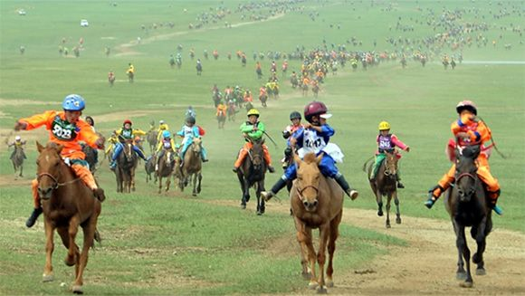

Cultural Highlights
Immerse yourself in Mongolia's rich history and traditions.
Attending the Naadam Festival, a celebration of Mongolian sports.
The Naadam Festival is Mongolia's biggest celebration, held every July. Known as the "Three Games of Men", it features traditional sports: wrestling, horse racing, and archery. It's colorful event where locals wear traditional clothing, enjoy festive food, and honor their culture. Naadam showcases Mongolia's history and nomadic spirit, making it a vibrant and unforgettable experience.
Mongolian horse is one of the highlights of the Naadam Festival, showcasing the strength and endurance of Mongolia's iconic horses. Unlike traditional races, these events cover long distances, often 15-30 kilometers across open terrain. Riders, usually children aged 6-13, guide their horses with incredible skill. The focus is on the horse's performance, celebrating the deep bond between Mongolians and our resilient steeds.